1. Zwerchfell-Kuppelkröte
Diaphragma
Diaphragma
GPT-image-2-high · deutsche Version
Ein Sketchy/Meditricks-artiger Gedächtnispalast für inspiratorische und exspiratorische Atemmuskeln. Die Kunst dient als Haken; die Tabelle ist die exakte Faktenebene.
Alle 15 Einzel-Szenen sind zu einem zusammenhängenden Opernhaus-Poster collagiert.
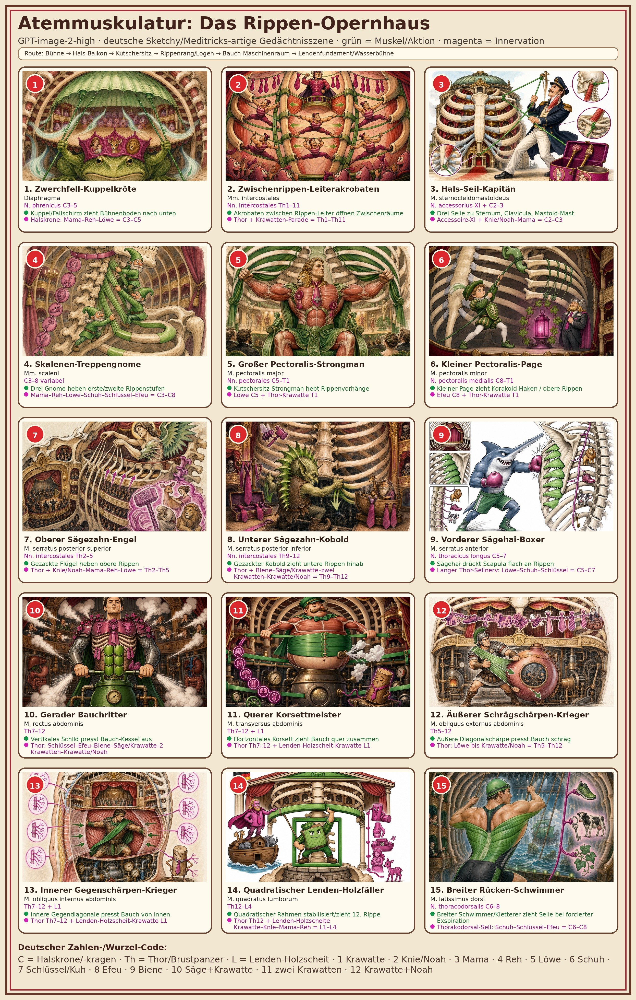
Diaphragma — N. phrenicus C3–5
Kuppel/Fallschirm zieht Bühnenboden nach unten
Halskrone: Mama–Reh–Löwe = C3–C5
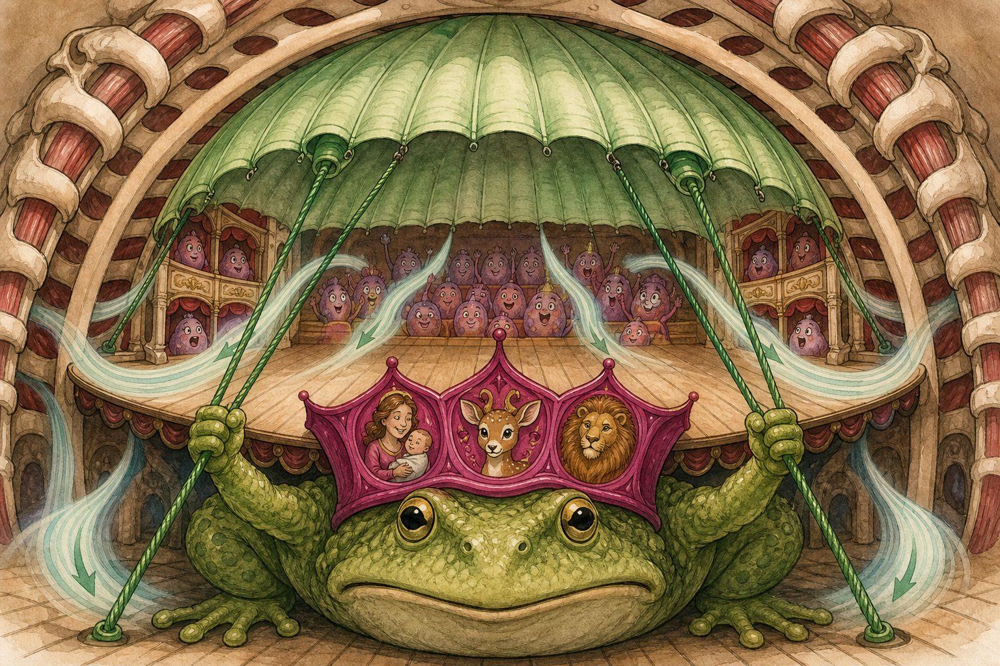
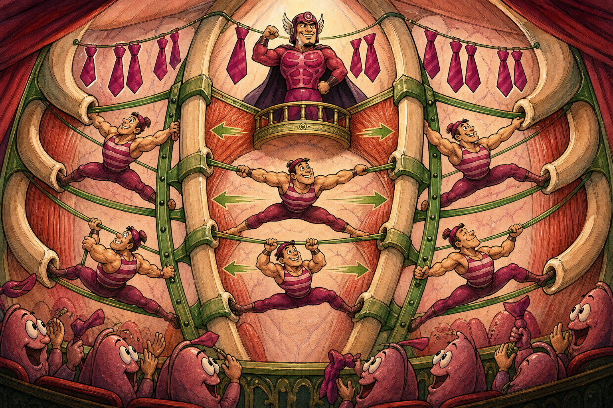
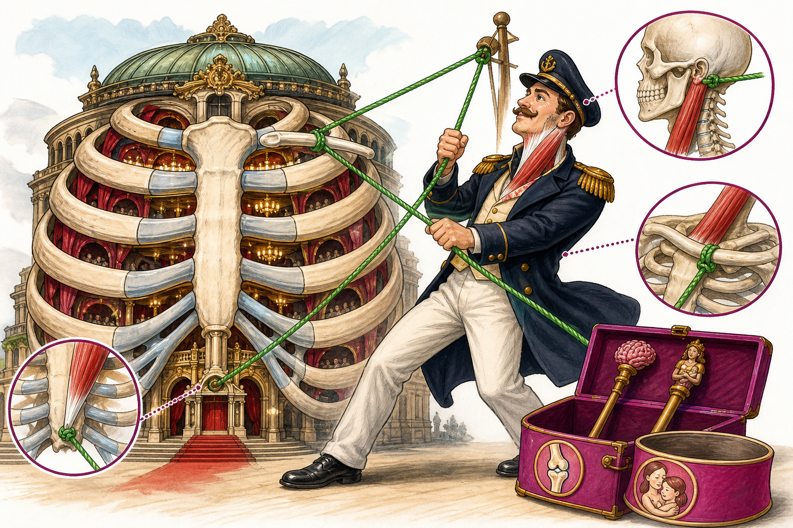
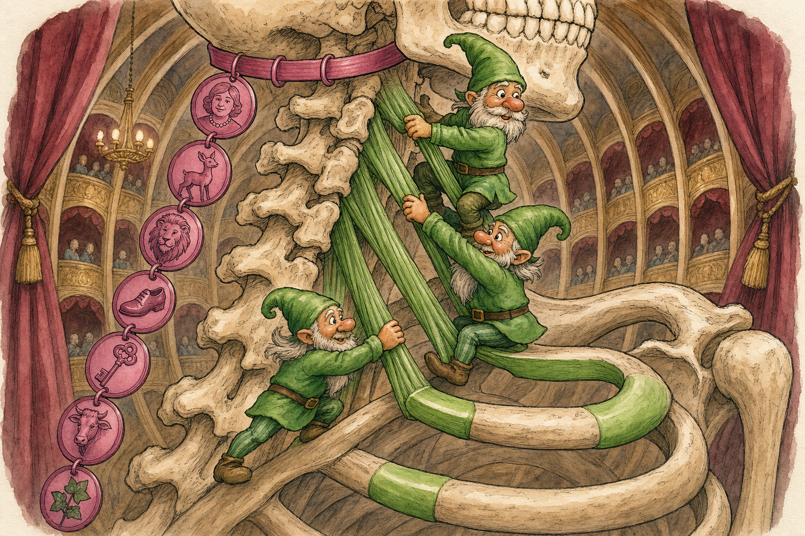
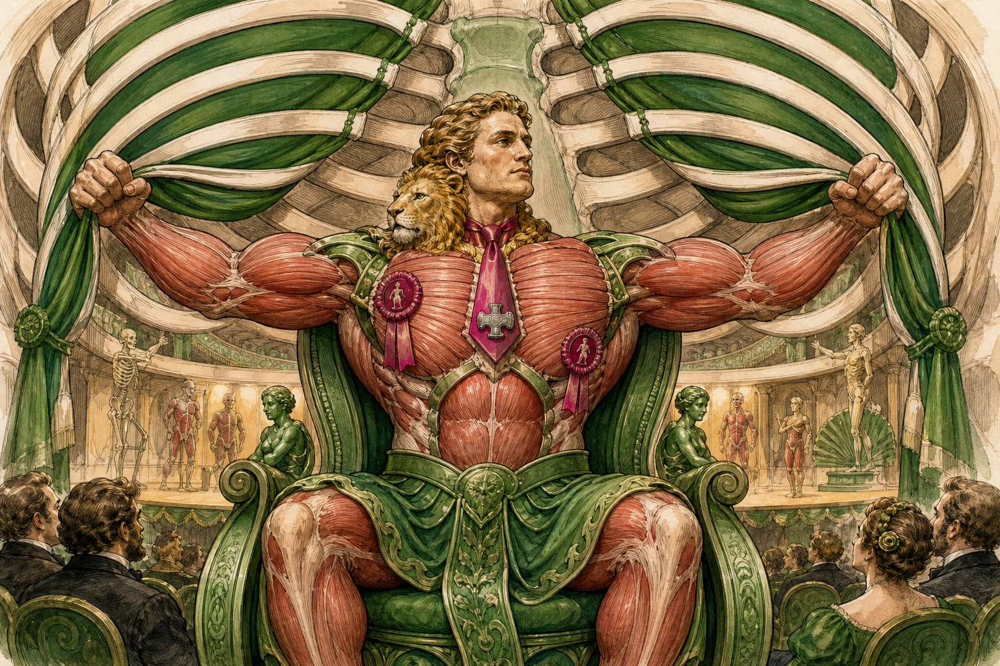
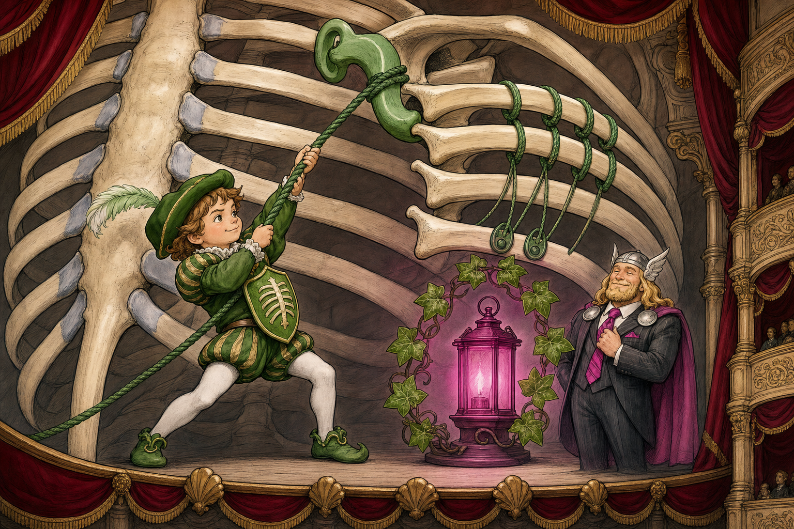
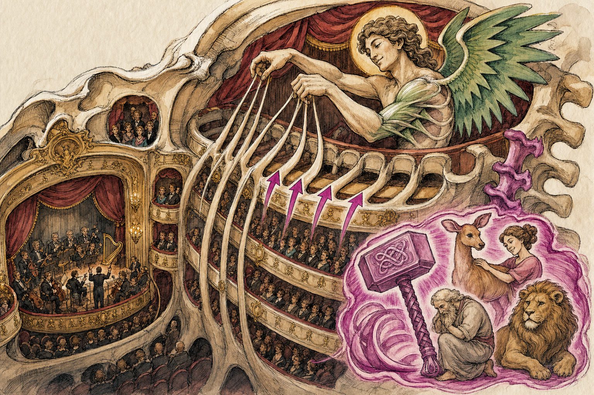
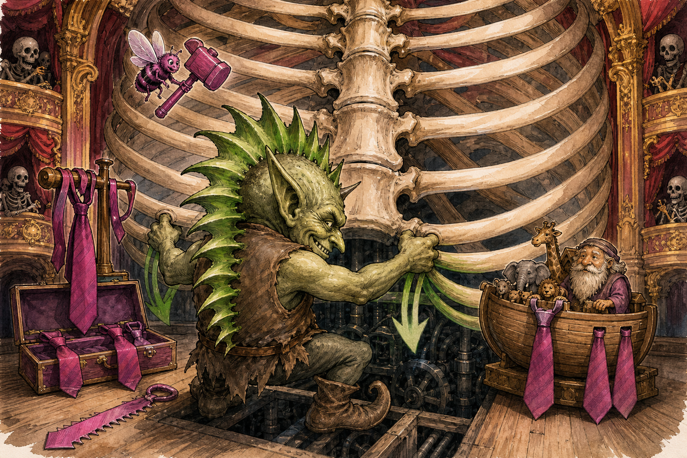
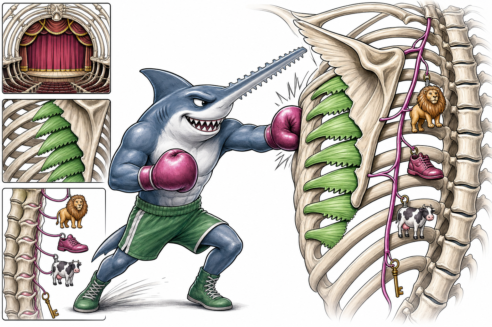
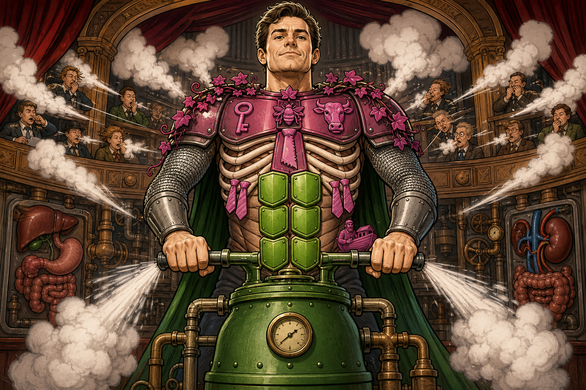
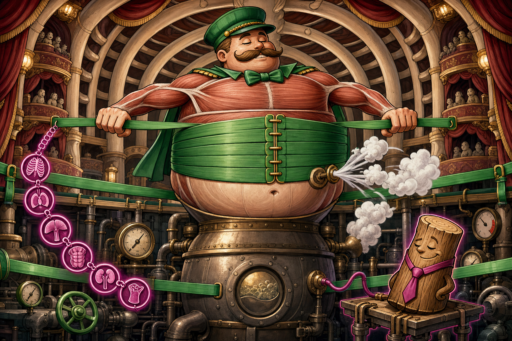
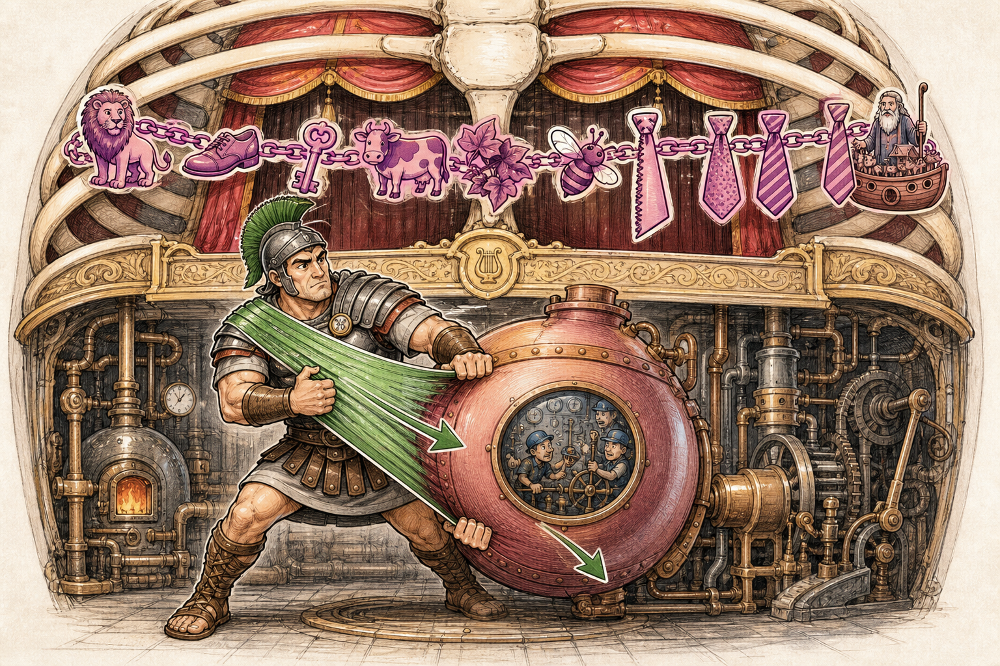
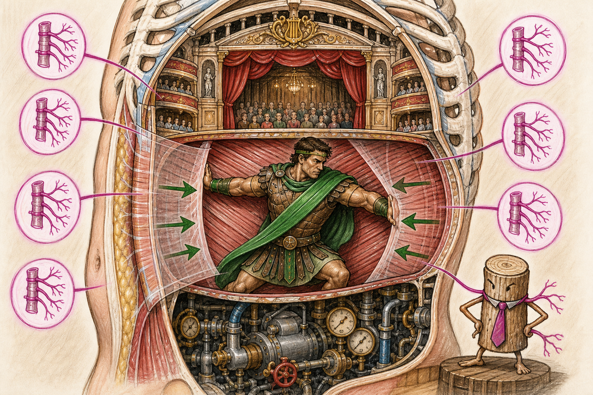
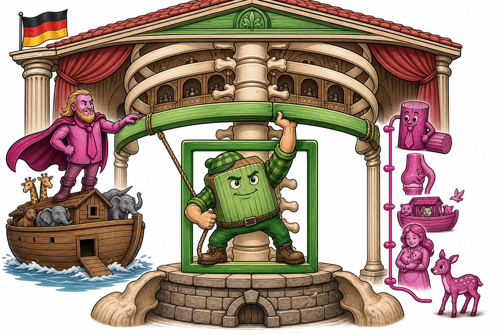
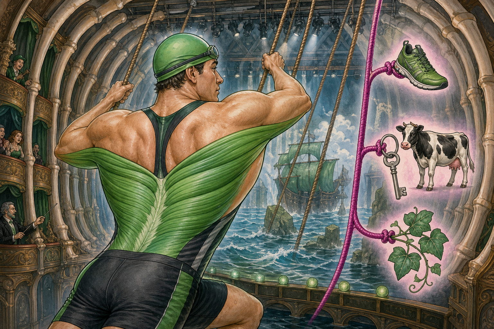
| # | Figur / Muskel | Innervation | grüner Haken | magenta Haken |
|---|---|---|---|---|
| 1 | Zwerchfell-Kuppelkröte Diaphragma | N. phrenicus C3–5 | Kuppel/Fallschirm zieht Bühnenboden nach unten | Halskrone: Mama–Reh–Löwe = C3–C5 |
| 2 | Zwischenrippen-Leiterakrobaten Mm. intercostales | Nn. intercostales Th1–11 | Akrobaten zwischen Rippen-Leiter öffnen Zwischenräume | Thor + Krawatten-Parade = Th1–Th11 |
| 3 | Hals-Seil-Kapitän M. sternocleidomastoideus | N. accessorius XI + C2–3 | Drei Seile zu Sternum, Clavicula, Mastoid-Mast | Accessoire-XI + Knie/Noah–Mama = C2–C3 |
| 4 | Skalenen-Treppengnome Mm. scaleni | C3–8 variabel | Drei Gnome heben erste/zweite Rippenstufen | Mama–Reh–Löwe–Schuh–Schlüssel–Efeu = C3–C8 |
| 5 | Großer Pectoralis-Strongman M. pectoralis major | Nn. pectorales C5–T1 | Kutschersitz-Strongman hebt Rippenvorhänge | Löwe C5 + Thor-Krawatte T1 |
| 6 | Kleiner Pectoralis-Page M. pectoralis minor | N. pectoralis medialis C8–T1 | Kleiner Page zieht Korakoid-Haken / obere Rippen | Efeu C8 + Thor-Krawatte T1 |
| 7 | Oberer Sägezahn-Engel M. serratus posterior superior | Nn. intercostales Th2–5 | Gezackte Flügel heben obere Rippen | Thor + Knie/Noah–Mama–Reh–Löwe = Th2–Th5 |
| 8 | Unterer Sägezahn-Kobold M. serratus posterior inferior | Nn. intercostales Th9–12 | Gezackter Kobold zieht untere Rippen hinab | Thor + Biene–Säge/Krawatte–zwei Krawatten–Krawatte/Noah = Th9–Th12 |
| 9 | Vorderer Sägehai-Boxer M. serratus anterior | N. thoracicus longus C5–7 | Sägehai drückt Scapula flach an Rippen | Langer Thor-Seilnerv: Löwe–Schuh–Schlüssel = C5–C7 |
| 10 | Gerader Bauchritter M. rectus abdominis | Th7–12 | Vertikales Schild presst Bauch-Kessel aus | Thor: Schlüssel–Efeu–Biene–Säge/Krawatte–2 Krawatten–Krawatte/Noah |
| 11 | Querer Korsettmeister M. transversus abdominis | Th7–12 + L1 | Horizontales Korsett zieht Bauch quer zusammen | Thor Th7–12 + Lenden-Holzscheit-Krawatte L1 |
| 12 | Äußerer Schrägschärpen-Krieger M. obliquus externus abdominis | Th5–12 | Äußere Diagonalschärpe presst Bauch schräg | Thor: Löwe bis Krawatte/Noah = Th5–Th12 |
| 13 | Innerer Gegenschärpen-Krieger M. obliquus internus abdominis | Th7–12 + L1 | Innere Gegendiagonale presst Bauch von innen | Thor Th7–12 + Lenden-Holzscheit-Krawatte L1 |
| 14 | Quadratischer Lenden-Holzfäller M. quadratus lumborum | Th12–L4 | Quadratischer Rahmen stabilisiert/zieht 12. Rippe | Thor Th12 + Lenden-Holzscheite Krawatte–Knie–Mama–Reh = L1–L4 |
| 15 | Breiter Rücken-Schwimmer M. latissimus dorsi | N. thoracodorsalis C6–8 | Breiter Schwimmer/Kletterer zieht Seile bei forcierter Exspiration | Thorakodorsal-Seil: Schuh–Schlüssel–Efeu = C6–C8 |
Route: Zwerchfell-Bühne → Zwischenrippen-Leiter → Halshelfer → Kutschersitz → Sägezahn-Logen → Bauch-Maschinenraum → Lendenfundament → breiter Rücken-Schwimmer.
Ignoriere eventuell generierte Mikro-Schrift in den Bildern. Verbindlich sind die deutschen Bildhaken und die Tabelle.